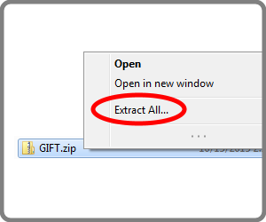
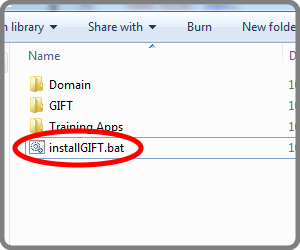
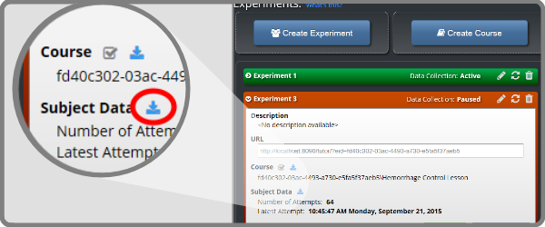
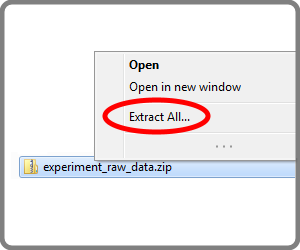
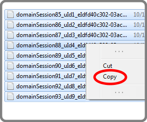
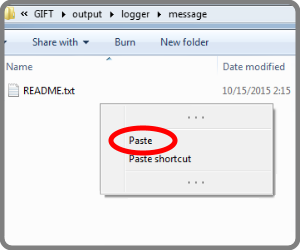
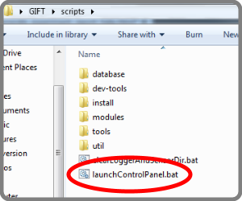
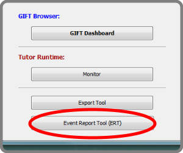

Step 2:
Install GIFT Local.


Step 3: Download your
experiment's subject data

Step 4:
Unzip the subject data into the GIFT/output/logger/messages folder within your GIFT Local installation.



Step 5:
Launch the Event Report Tool (ERT) from GIFT/scripts/launchControlPanel.bat

